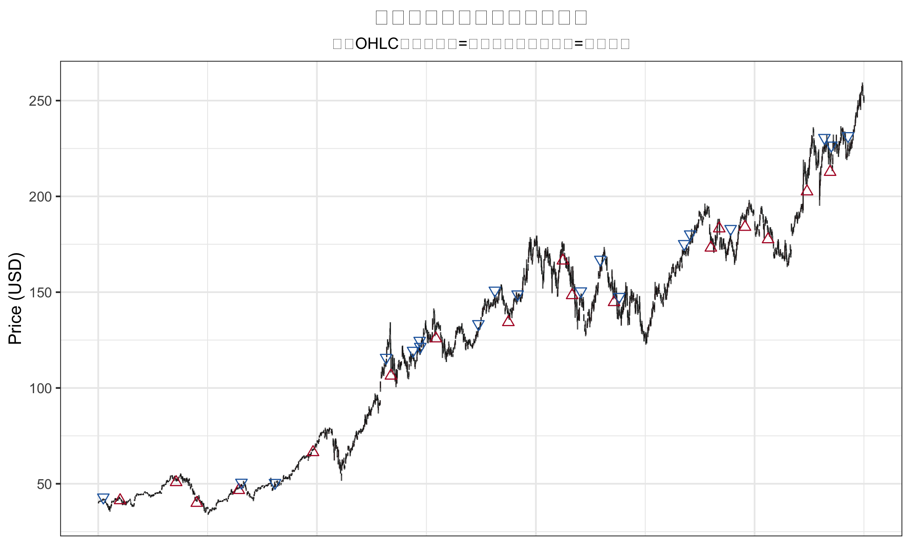
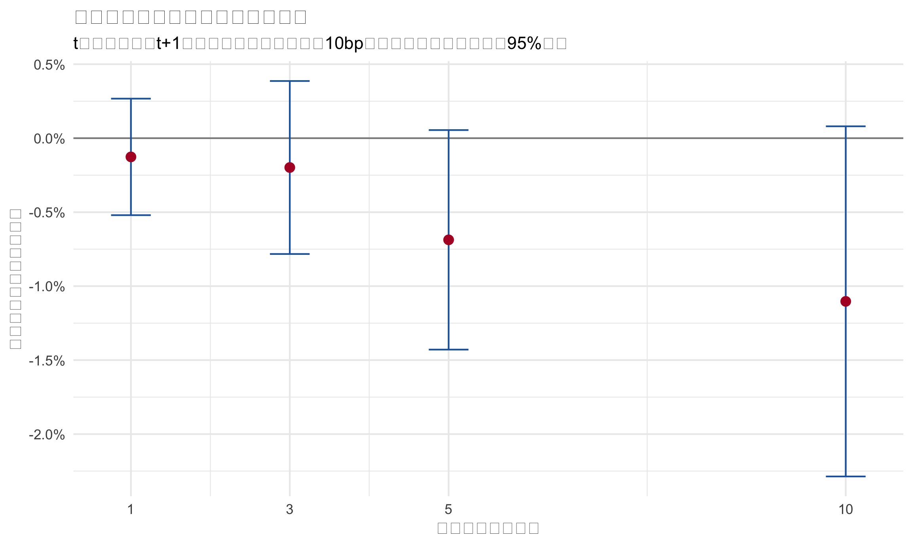

形态汇聚、冲突与概率评分
问题现场
同一交易日可能同时被识别为十字、孕线和星线。把三个名称当成“三重确认”会高估证据，因为这些标签往往共享同一组OHLC条件。相反，看涨与看跌形态也可能冲突。汇聚分析的第一步不是加分，而是识别依赖和冲突。
学习目标
- 区分命中数量、净方向和独立信息；
- 计算形态重叠与方向冲突；
- 构建不使用未来收益的透明评分；
- 比较单形态与汇聚信号的样本量；
- 识别稀缺性加权和事后调权的风险。
经典形态与市场机制
经典分析常建议寻找多项确认：反转形态靠近支撑、同时出现超卖或成交量放大。这个思想有价值，但“确认”必须来自不同信息维度。两个都由实体包含关系派生的形态高度相关；价格形态、趋势位置和成交量更可能提供互补信息。
汇聚也可能表示规则重叠，而非市场力量更强。十字孕线同时属于孕线与十字，启明星中的中间星也可能是十字。重复计数会让评分看似确信，实则只是同一几何条件被多次命名。
原始分数不等于概率。只有在训练样本中把分数映射到未来标签，并在独立样本检查可靠性曲线，才能使用“上涨概率”或“下跌概率”的语言。单一标的样本不足以建立稳定校准，本章首先建立透明、可追溯的分数，并把概率校准留作跨标的扩展。
可计算定义
设 \(s_{j,t}\) 为第 \(j\) 个形态方向，原始分数为 \(q_t=\sum_j w_js_{j,t}\)，命中数为 \(m_t=\sum_j I(s_{j,t}\ne0)\)。本章先使用 \(w_j=1\)，仅当 \(m_t\ge2\) 且 \(q_t\ne0\) 时产生：
\[ s_t=\operatorname{sign}(q_t). \]
冲突强度可定义为 \(c_t=m_t-|q_t|\)；在等权±1信号下，冲突越多，净方向相对命中数越小。稀缺性权重 \(w_j\propto1/\sqrt{N_j}\) 虽能避免高频形态支配，却会放大极小样本，不作为默认方案。
研究设计
输入包含锤子、流星、吞没、星线、孕线、反击线与十字七组方向。主信号要求至少两组命中且净方向不为零。稳健性一：把最低命中数从2改为3；稳健性二：先把同一形态家族压缩成一票；稳健性三：只保留非重叠事件。所有权重在查看收益前设定；若进一步做概率校准，训练期与检验期必须物理分离。
R实现
signals <- lab_base_signals()
signal_matrix <- do.call(cbind, signals[c(
"hammer", "shooting", "engulfing", "star",
"harami", "counter", "doji"
)])
hit_count <- rowSums(signal_matrix != 0)
raw_score <- rowSums(signal_matrix)
cluster_signal <- ifelse(
hit_count >= 2 & raw_score != 0,
sign(raw_score), 0
)
conflict <- hit_count - abs(raw_score)原始矩阵、命中数、净分数和最终信号分列保存。若只保存最终±1，无法解释某次信号究竟来自两票同向还是五票中三对二。
Python实现
import pandas as pd
from python.candlestick_lab import pattern_signal
names = ["hammer", "shooting", "engulfing", "star", "harami", "counter", "doji"]
matrix = pd.concat({name: pattern_signal(name) for name in names}, axis=1)
hit_count = matrix.ne(0).sum(axis=1)
raw_score = matrix.sum(axis=1)
cluster_signal = raw_score.where(hit_count.ge(2), 0).apply(lambda x: int(x > 0) - int(x < 0))
conflict = hit_count - raw_score.abs()Python代码用显式名称列表固定研究范围。字典或包升级不会自动把新形态加入历史回测。
图形诊断

对每个标记应查看构成票数和冲突强度。若信号大量集中在极端波动日，汇聚可能只是多个检测器共同响应大振幅。
证据与稳健性
| sample | events | mean_gross | mean_net | win_rate | ci_low | ci_high |
|---|---|---|---|---|---|---|
| 全部事件 | 81 | -0.0059 | -0.0069 | 0.4321 | -0.0143 | 5e-04 |
| 非重叠事件 | 72 | -0.0061 | -0.0071 | 0.4028 | -0.0152 | 1e-03 |

汇聚显著减少事件数，但不保证均值改善；置信区间会因样本减少而变宽。稳健性报告应同时展示阈值1、2、3的完整路径，而不是只展示最佳阈值。还应对分数和实现波动率做相关分析，确认评分不是波动代理。
AI协作实验室
AI生成形态依赖图：节点为形态，边权为Jaccard重叠率；再提出按家族去重方案。约束是权重不能读取未来收益。验收检查评分能由原始布尔列精确重算，且删除任一形态后变化符合预期。
失效条件与常见误区
- 把重复命名当独立确认；
- 根据回测收益优化每个形态权重；
- 稀有形态使用过大的逆频率权重；
- 只保存最终信号，丢失评分构成；
- 忽略正负信号抵消所包含的不确定性。
本章小结与练习
汇聚的价值来自互补信息，而非名称数量。透明评分要同时保留命中、方向、冲突和权重来源；未经样本外校准的分数不能包装成概率。
- 画七组形态的Jaccard矩阵并找出最相似的一对。
- 将最低命中数改为3，比较样本量与置信区间。
- 设计按形态家族一票制的评分，并说明为何不使用收益调权。
进入下一章前，请确认你能从最终信号追溯到每一票，并能解释为什么汇聚减少样本后未必更可靠。